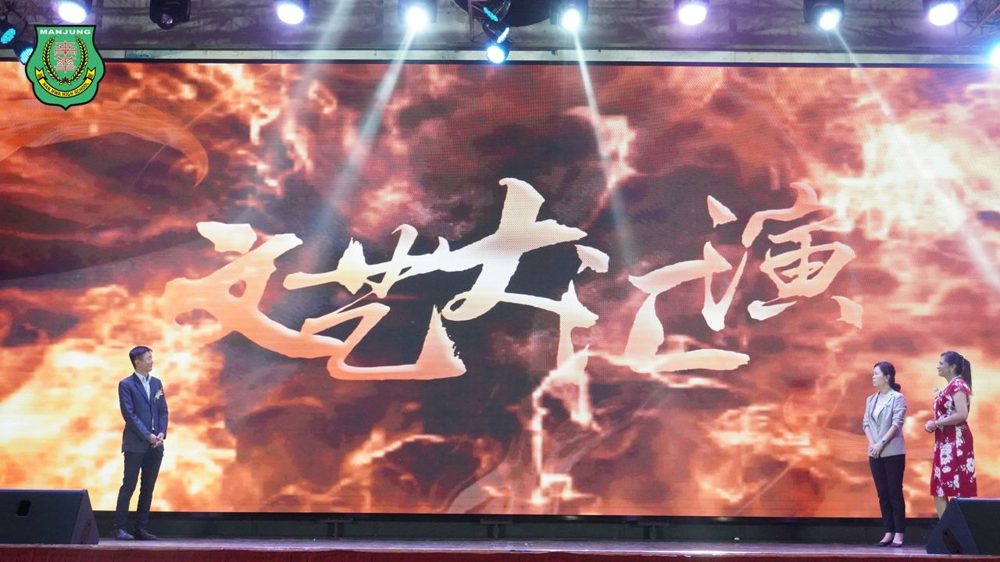
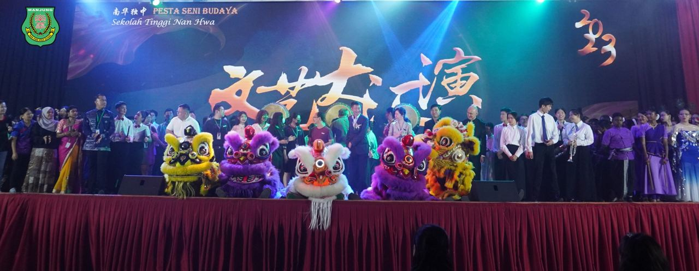
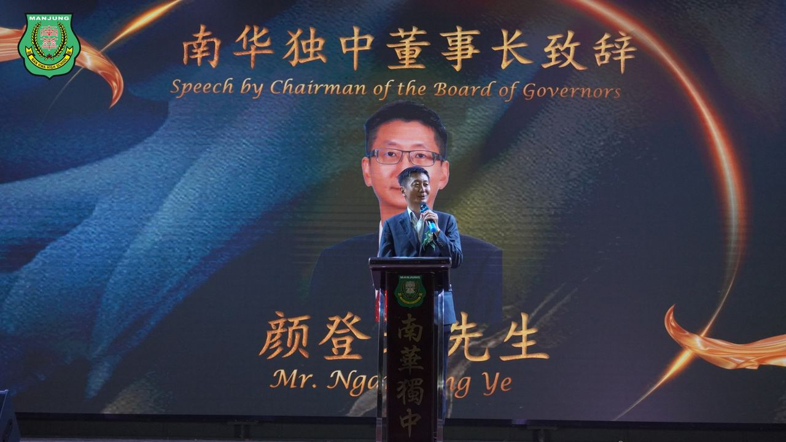
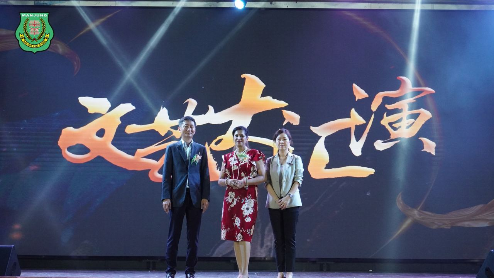
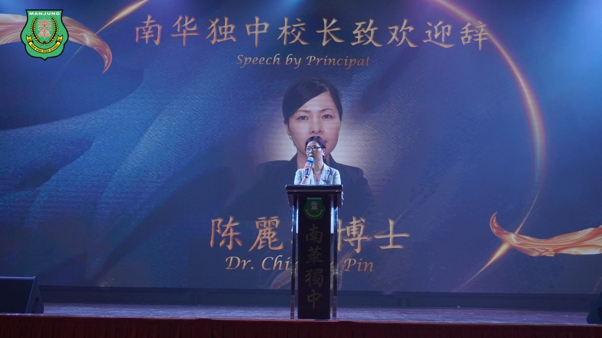
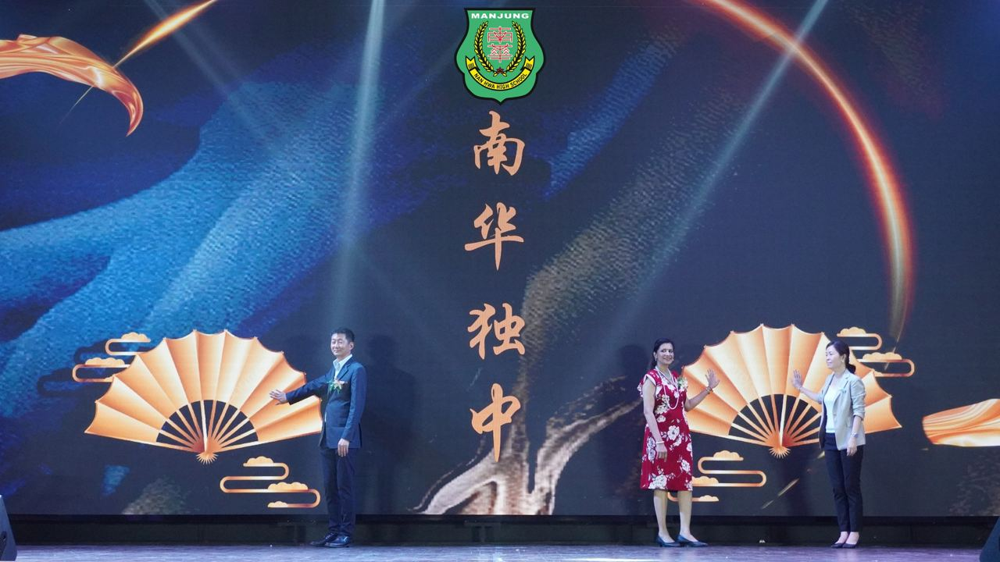
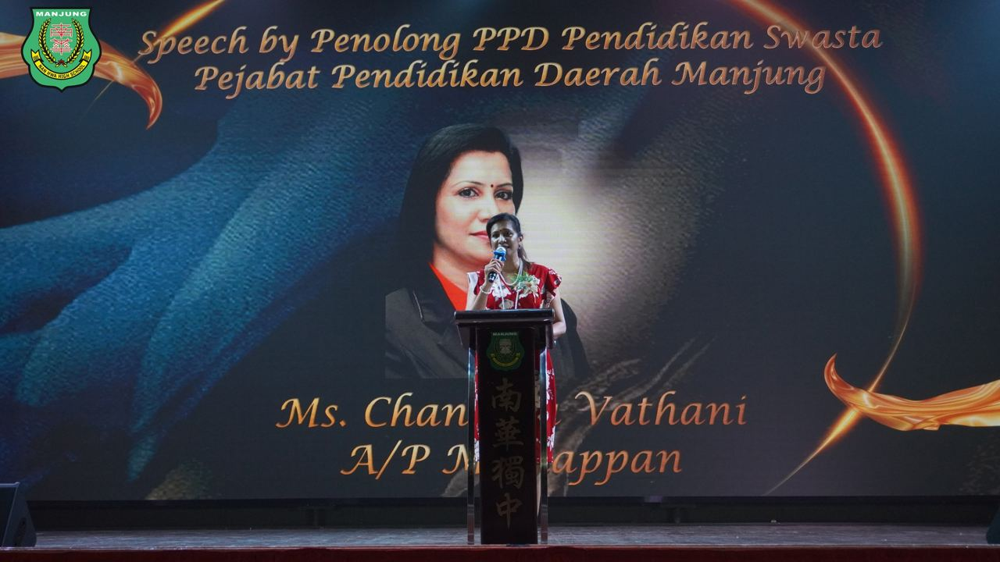
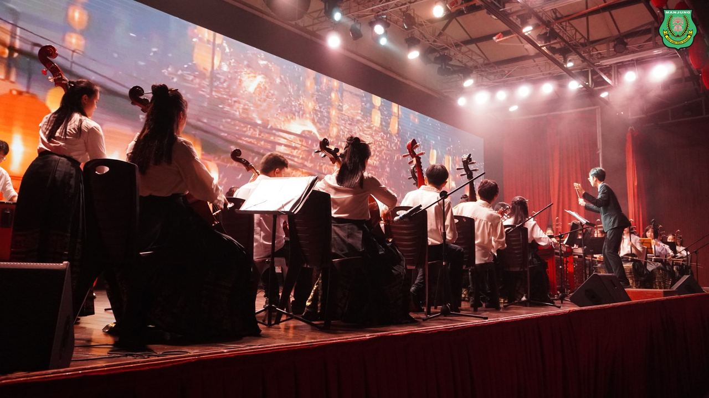

南华独中文艺大汇演空前盛况
南华独中文艺大汇演空前盛况
吸引逾五百名文艺爱好者出席观赏
本校于日前成功举办了一场引人瞩目的2023年文艺大汇演，活动的宗旨旨在促进与推广文化传统及艺术表演，进而达成跨文化、民族与语言的交融。现场吸引了超过500名文艺爱好者的热情参与。
在开幕辞中，南华独中的董事长暨文艺大汇演艺术总监表示，随着21世纪的到来，时代变迁迅速，传统教学已经不能满足培养下一代与人工智能竞争的需求。他认为，文艺活动是一个理想的平台，可以让学生通过学习美感，获得未来竞争的最佳优势。颜董事长强调，尽管马来西亚在独立65年来各民族之间保持着和谐，但深度的了解仍然不足。为了强大起来，提升国家在与周边国家的竞争中的优势，必须通过各民族的团结来取得进步。他对南华独中通过这次大汇演融合跨文化、跨语言与跨种族的努力表示祝愿。
南华独中的校长暨文艺大汇演节目总监陈丽冰博士在致辞中表示，文化是一个民族、一个社会的灵魂，而艺术则是这灵魂的表达者。她指出，这次大汇演旨在通过多样化的表达形式，展现丰富多彩的文化底蕴。从舞蹈到音乐，从敲击到戏剧，每一种艺术形式都是一次心灵的对话，能够跨越语言和国界，让人们更加深刻地理解彼此。陈校长特此呼吁大家保持对艺术的热情，让文化在人们的生活中绽放。让各位共同努力，传承并创新，为后代留下丰富多彩的文化遗产。
曼绒县教育局（私立学府部门）的负责官员珊德拉女士在致辞中表示，学校是文化与艺术的摇篮，而老师是培养未来艺术家的推手。她强调，马来西亚教育部一直以来都非常支持学校举办各式各样的文艺活动。对于南华独中成功举办了这场盛宴，尤其是这次文艺大汇演集结了众多元素，包括东西方乐器演奏与合奏、合唱团、文艺歌曲、相声表演、三大民族的舞蹈与众舞、二十四节令鼓等，珊德拉女士感到格外光荣。这场艺术的百花齐放，无疑是文化传承与创新的生动展示，为学生提供了更广阔的学习空间，也为整个曼绒县乃至全国的文化大融汇带来了一次重要的推动。
#文艺大汇演 #跨文化 #跨民族 #跨语言
#南华独中 #曼绒 #实兆远







